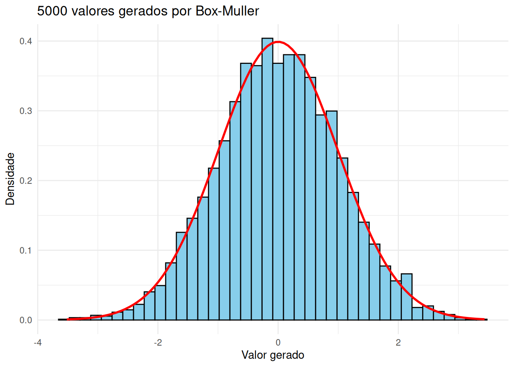
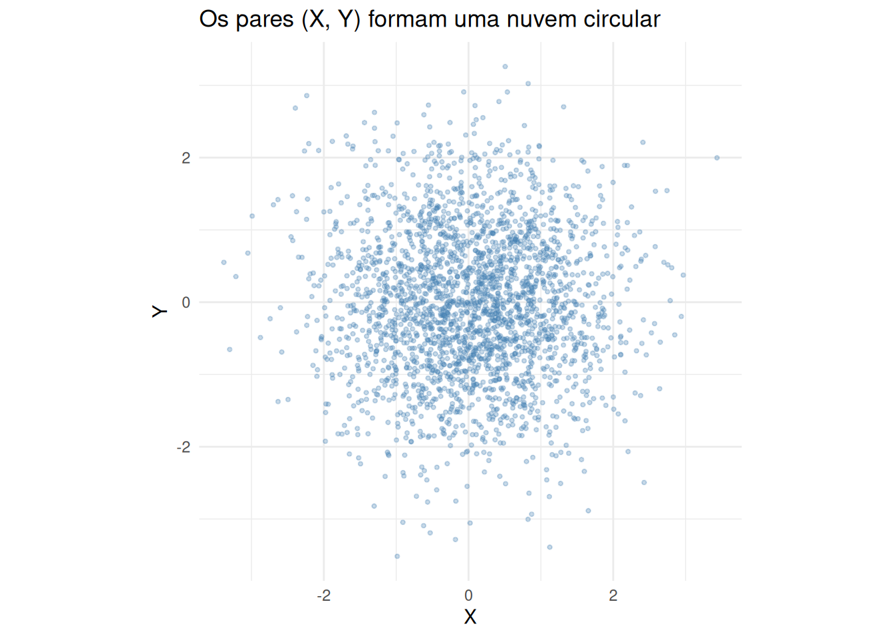
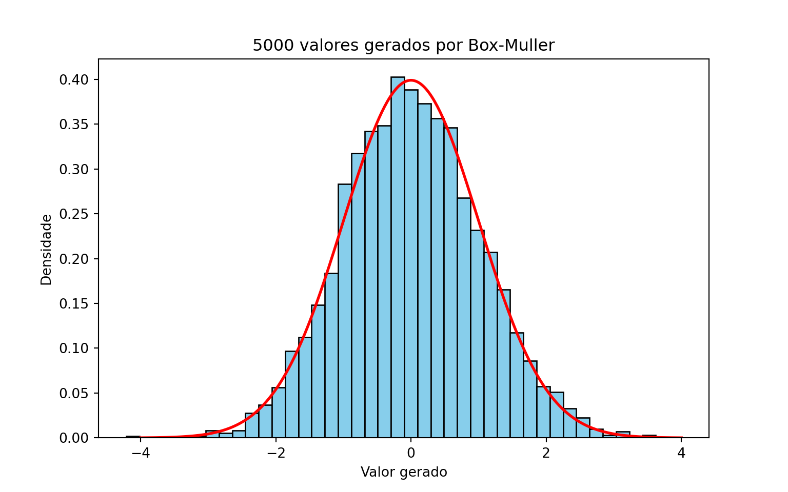
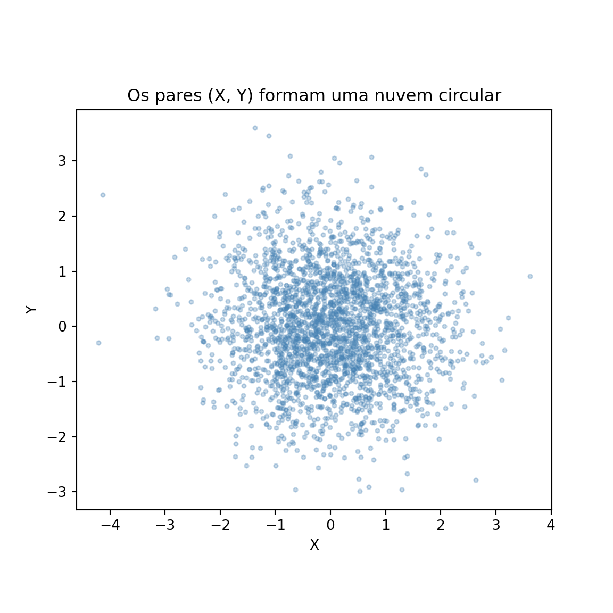
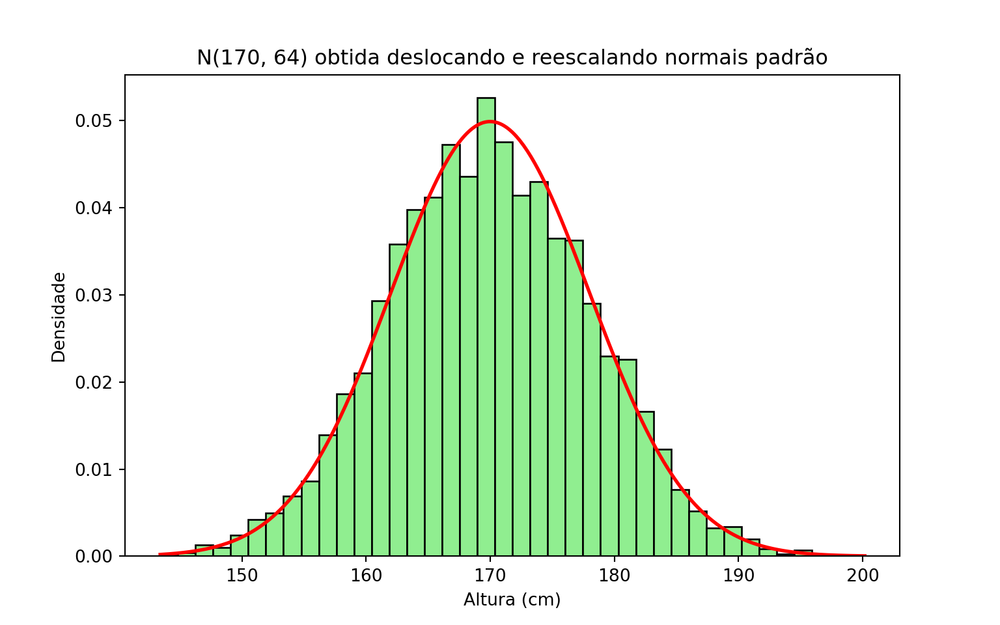
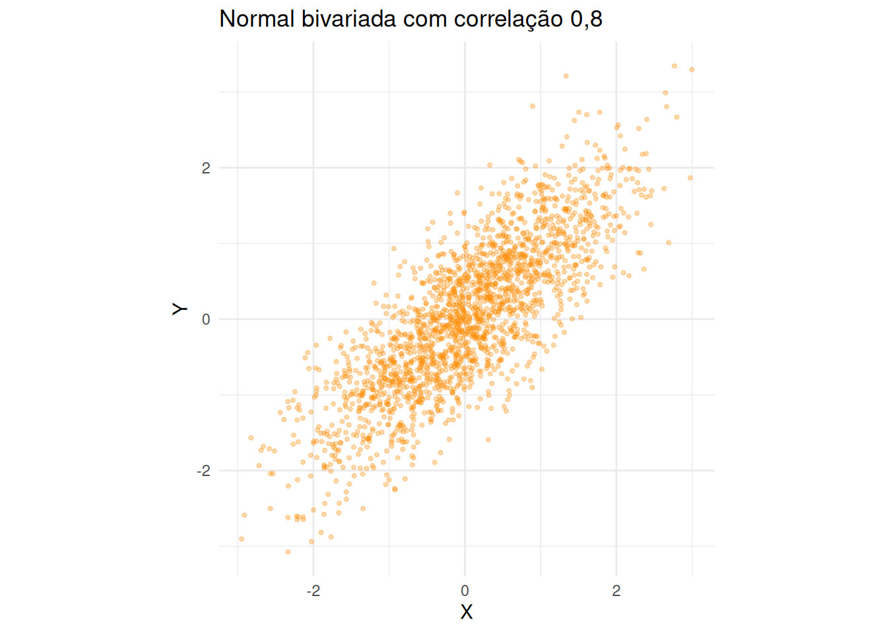
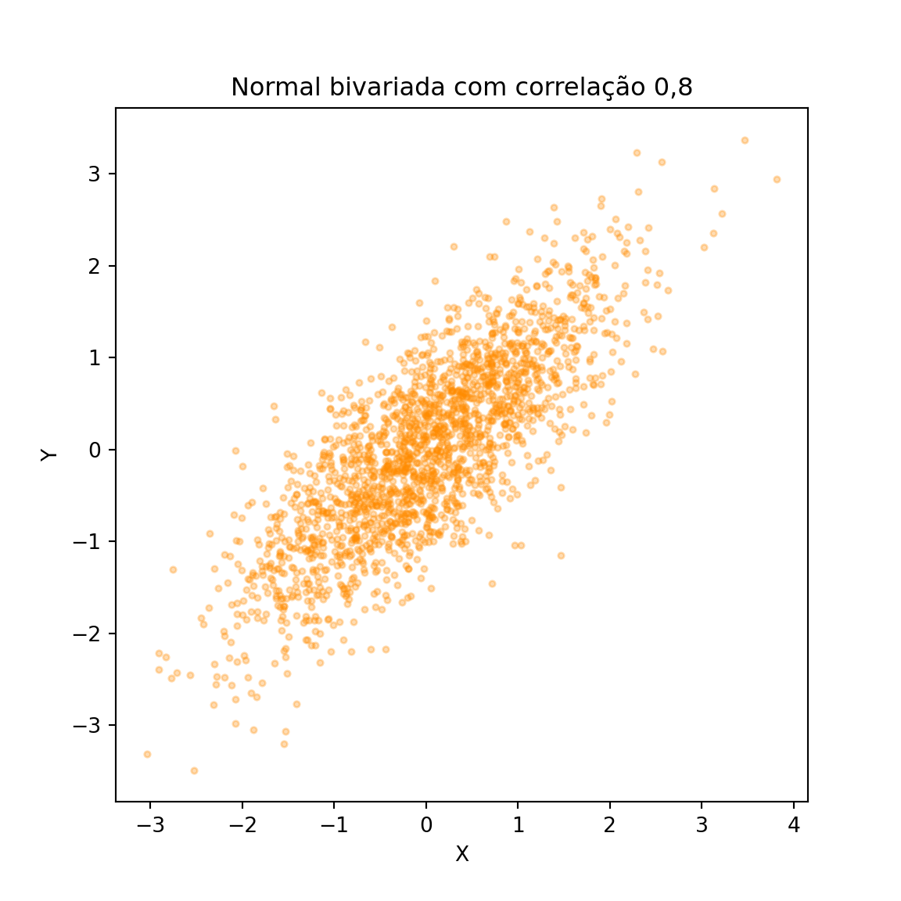
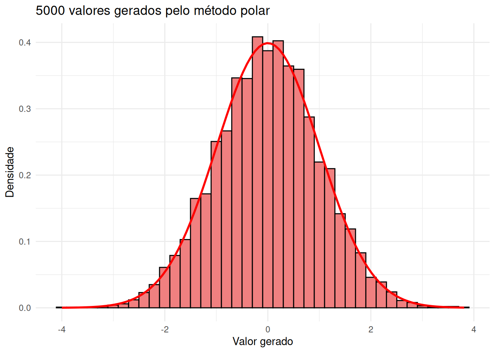

No Capítulo 6 já geramos valores de uma \(N(0,1)\) pelo método da rejeição: propúnhamos uma \(\text{Exp}(1)\), aceitávamos cerca de \(76\%\) dos candidatos e sorteávamos um sinal no final. O algoritmo funciona, mas cobra caro — são necessários, em média, cerca de \(3{,}6\) uniformes para cada normal produzida, e há um laço que pode, em princípio, demorar.
Este capítulo apresenta um método que faz melhor: a partir de exatamente dois uniformes, ele devolve duas normais padrão independentes, sem rejeitar nada. É o método de Box-Muller, e ele é um caso particular do método da transformação do capítulo anterior — com uma escolha de transformação que ninguém adivinharia olhando apenas para a densidade da normal.
O truque é justamente esse: em vez de atacar uma normal de cada vez, atacamos duas ao mesmo tempo.
8.1 A ideia: olhar para o par, não para a coordenada
Por que olhar para duas normais ajudaria, se nem uma sabemos gerar por inversão? Porque o par tem uma estrutura que a coordenada isolada não tem. Se \(X \sim N(0,1)\) e \(Y \sim N(0,1)\) são independentes, a densidade conjunta é
Repare que \((x,y)\) aparece somente através de \(x^2 + y^2\), ou seja, através da distância do ponto à origem. Dois pontos que estejam à mesma distância da origem têm exatamente a mesma densidade, não importa em que direção estejam. A nuvem de pontos \((X, Y)\) é circularmente simétrica: não tem direção preferida.
E a maneira natural de descrever algo que só depende da distância à origem é trocar as coordenadas cartesianas \((x,y)\) pelas coordenadas polares: a distância \(r\) e o ângulo \(\theta\). É o que faremos a seguir — e a surpresa é que, nessas coordenadas, as duas variáveis resultantes são fáceis de simular.
8.2 Representação em coordenadas polares
Considere duas variáveis aleatórias \(X \sim N(0, 1)\) e \(Y \sim N(0, 1)\), independentes entre si. No plano cartesiano, podemos representar o ponto \((X, Y)\) e descrevê-lo pelo par \((R, \Theta)\), em que \(R\) é a distância do ponto à origem e \(\Theta\) é o ângulo formado com o eixo horizontal.
Dessa forma, obtemos as duas relações que usaremos o capítulo inteiro:
\[
X = R \cos \Theta, \qquad Y = R \sin \Theta,
\qquad \text{com} \qquad R^2 = X^2 + Y^2.
\]
8.3 A distribuição de \(R\) e \(\Theta\)
As variáveis \(R\) e \(\Theta\) são uma transformação do par \((X, Y)\). Para obter a densidade conjunta de \((R, \Theta)\), usamos a fórmula de mudança de variáveis em duas dimensões:
em que \(h_1(r,\theta) = r\cos\theta\) e \(h_2(r,\theta) = r\sin\theta\) são as transformações inversas (as que expressam \(X\) e \(Y\) em termos de \(R\) e \(\Theta\)), e \(J_h\) é o Jacobiano dessas funções:
Sejam \(X\) e \(Y\) independentes, ambas \(N(0,1)\), e sejam \(R \geq 0\) e \(\Theta \in (0, 2\pi)\) suas coordenadas polares. Então \(R\) e \(\Theta\) são independentes, com
Substituindo \(f_{X,Y}(x,y) = \frac{1}{2\pi} e^{-(x^2+y^2)/2}\) na fórmula da mudança de variáveis, e usando que \((r\cos\theta)^2 + (r\sin\theta)^2 = r^2\), obtemos
A densidade conjunta fatorou em um termo que só depende de \(\theta\) e outro que só depende de \(r\): é exatamente isso que significa \(R\) e \(\Theta\) serem independentes. Como cada fator é uma densidade legítima em seu domínio, lemos diretamente que
isto é, \(\Theta \sim \text{Unif}(0, 2\pi)\) e \(R \sim \text{Rayleigh}(1)\).
Falta passar de \(R\) para \(R^2\). Para \(w > 0\),
\[
\mathbb{P}(R^2 \leq w) = \mathbb{P}(R \leq \sqrt{w}) =
\int_0^{\sqrt{w}} r e^{-r^2/2}\, dr = 1 - e^{-w/2},
\]
que é a f.d.a. de uma \(\text{Exp}(1/2)\) (exponencial de taxa\(1/2\), e portanto de média \(2\)). \(\square\)
Rayleigh, qui-quadrado e exponencial
A distribuição de \(R\) tem nome: \(\text{Rayleigh}(1)\). E a de \(R^2\) tem dois: como \(R^2 = X^2 + Y^2\) é a soma dos quadrados de duas normais padrão independentes, pela definição do Capítulo 7 temos \(R^2 \sim \chi^2_2\). A demonstração acima mostra que essa \(\chi^2_2\) é a mesma coisa que uma \(\text{Exp}(1/2)\) — fato que também aparece no Exercício 12 do Capítulo 7, por outro caminho.
Não é uma coincidência sem graça: é justamente ela que torna o método viável, porque exponenciais nós sabemos gerar por inversão desde o Capítulo 4.
8.4 O algoritmo
A proposição acima descreve o caminho de ida: das normais para as coordenadas polares. O método de Box-Muller percorre esse caminho ao contrário. Se conseguirmos gerar \(R\) e \(\Theta\) com as distribuições certas, as fórmulas \(X = R\cos\Theta\) e \(Y = R\sin\Theta\) nos devolvem o par de normais.
E gerar \(R\) e \(\Theta\) é fácil, porque as duas são independentes e cada uma sai de um único uniforme:
\(\Theta \sim \text{Unif}(0, 2\pi)\) é apenas uma mudança de escala: \(\Theta = 2\pi U_2\);
\(R^2 \sim \text{Exp}(1/2)\) sai por inversão (Capítulo 4): como \(F(w) = 1 - e^{-w/2}\), temos \(R^2 = -2\log(1 - U_1)\), ou, trocando \(1-U_1\) por \(U_1\) (a mesma observação feita no Capítulo 7), \(R^2 = -2 \log U_1\). Daí \(R = \sqrt{-2\log U_1}\).
Pseudo-algoritmo: Box-Muller
Gere \(U_1 \sim \text{Unif}(0,1)\) e \(U_2 \sim \text{Unif}(0,1)\), independentes.
Calcule o raio \(R = \sqrt{-2 \log U_1}\) e o ângulo \(\Theta = 2\pi U_2\).
Devolva o par
\[
X = R \cos \Theta = \sqrt{-2 \log U_1} \, \cos(2\pi U_2),
\qquad
Y = R \sin \Theta = \sqrt{-2 \log U_1} \, \sin(2\pi U_2).
\]
Proposição: validade do método
As variáveis \(X\) e \(Y\) devolvidas pelo algoritmo são independentes e ambas têm distribuição \(N(0,1)\).
Demonstração
O passo 2 produz \(\Theta \sim \text{Unif}(0,2\pi)\) e \(R^2 \sim \text{Exp}(1/2)\), independentes (porque \(U_1\) e \(U_2\) o são). Logo, o par \((R, \Theta)\) gerado tem exatamente a densidade conjunta
\[
f_{R,\Theta}(r,\theta) = \frac{1}{2\pi}\, r e^{-r^2/2}
\]
obtida na proposição anterior.
Falta ver que aplicar \(x = r\cos\theta\), \(y = r\sin\theta\) a esse par devolve a densidade conjunta de duas normais padrão. Usamos de novo a fórmula de mudança de variáveis, agora no sentido contrário: o Jacobiano da transformação que leva \((x,y)\) em \((r,\theta)\) é o inverso do anterior, ou seja, \(1/r\). Como \(r = \sqrt{x^2+y^2}\),
A densidade conjunta fatorou no produto de duas densidades \(N(0,1)\), o que significa que \(X\) e \(Y\) são independentes e cada uma é \(N(0,1)\). \(\square\)
Vale registrar o que o método tem de notável: ele é exato (não é uma aproximação, como somar doze uniformes e apelar para o Teorema Central do Limite), não rejeita nada (todo par de uniformes vira um par de normais) e consome exatamente um uniforme por normal gerada — contra os \(3{,}6\) do método da rejeição do Capítulo 6.
Atenção: três armadilhas de implementação
log é logaritmo natural tanto em R quanto em Python (np.log). Se você usar log10, o método simplesmente gera outra distribuição, sem dar erro.
Os senos e cossenos estão em radianos. É por isso que \(\Theta = 2\pi U_2\) entra direto em cos() e sin(), sem conversão para graus.
\(U_1\) não pode valer \(0\), senão \(\log U_1 = -\infty\) e o algoritmo devolve Inf ou NaN. O runif do R e o np.random.uniform do Python não devolvem esse valor na prática, mas um gerador escrito por você (como o LCG do Capítulo 2) pode devolver — veja o Exercício 11.
Em Python, ^não é exponenciação: use **. Escrever V1^2 não dá erro, mas calcula um “ou exclusivo” bit a bit.
8.5 Exemplo 1: gerando normais padrão
O código abaixo implementa o pseudo-algoritmo em uma função que devolve \(B\) pares. Como cada par traz duas normais, geramos \(B = 2500\) pares para obter \(5000\) valores.
Além de comparar o histograma com a densidade da \(N(0,1)\), fazemos duas conferências que dizem respeito ao par: a correlação entre \(X\) e \(Y\) (que deve ser próxima de zero) e o gráfico de dispersão dos pares, que deve exibir a nuvem circular discutida no início do capítulo.
library(ggplot2)set.seed(42)# Gera B pares de normais padrão pelo método de Box-Muller.# Devolve um data.frame com colunas x e y: cada linha é um par (X, Y)box_muller <-function(B) { X <-numeric(B) Y <-numeric(B)for (i in1:B) {# Passo 1: dois uniformes independentes U1 <-runif(1) U2 <-runif(1)# Passo 2: o raio e o ângulo. Em R, log() é o logaritmo natural R <-sqrt(-2*log(U1)) Theta <-2* pi * U2# Passo 3: de coordenadas polares de volta para as cartesianas.# cos e sin esperam o ângulo em radianos, que é o que Theta já é X[i] <- R *cos(Theta) Y[i] <- R *sin(Theta) }return(data.frame(x = X, y = Y))}B <-2500# número de PARES: no fim teremos 2 * B = 5000 valores normaispares <-box_muller(B)cat("X: média", round(mean(pares$x), 3),"e desvio padrão", round(sd(pares$x), 3), "\n")
cat("Correlação entre X e Y:", round(cor(pares$x, pares$y), 3), "\n")
Correlação entre X e Y: -0.009
Mostrar código
# As duas colunas juntas: 2B valores, todos N(0,1)df <-data.frame(z =c(pares$x, pares$y))ggplot(df, aes(x = z)) +geom_histogram(aes(y =after_stat(density)), bins =40,fill ="skyblue", color ="black") +stat_function(fun = dnorm, color ="red", linewidth =1) +labs(title ="5000 valores gerados por Box-Muller",x ="Valor gerado", y ="Densidade") +theme_minimal()

Mostrar código
# coord_fixed deixa as duas escalas iguais: sem isso, um círculo pareceria# uma elipseggplot(pares, aes(x = x, y = y)) +geom_point(alpha =0.3, size =0.8, color ="steelblue") +coord_fixed() +labs(title ="Os pares (X, Y) formam uma nuvem circular",x ="X", y ="Y") +theme_minimal()

Mostrar código
import numpy as npimport matplotlib.pyplot as pltfrom scipy.stats import normnp.random.seed(42)# Gera B pares de normais padrão pelo método de Box-Muller.# Devolve dois vetores de tamanho B: o i-ésimo par é (X[i], Y[i])def box_muller(B): X = np.zeros(B) Y = np.zeros(B)for i inrange(B):# Passo 1: dois uniformes independentes U1 = np.random.uniform(0, 1) U2 = np.random.uniform(0, 1)# Passo 2: o raio e o ângulo. np.log é o logaritmo natural R = np.sqrt(-2* np.log(U1)) Theta =2* np.pi * U2# Passo 3: de coordenadas polares de volta para as cartesianas.# cos e sin esperam o ângulo em radianos, que é o que Theta já é X[i] = R * np.cos(Theta) Y[i] = R * np.sin(Theta)return X, YB =2500# número de PARES: no fim teremos 2 * B = 5000 valores normaisX, Y = box_muller(B)print("X: média", round(X.mean(), 3),"e desvio padrão", round(X.std(ddof=1), 3))
print("Correlação entre X e Y:", round(np.corrcoef(X, Y)[0, 1], 3))
Correlação entre X e Y: -0.039
Mostrar código
# Os dois vetores juntos: 2B valores, todos N(0,1)Z = np.concatenate([X, Y])# Malha usada só para desenhar a densidade teóricagrade = np.linspace(-4, 4, 400)plt.figure(figsize=(8, 5))plt.hist(Z, bins=40, density=True, color="skyblue", edgecolor="black")plt.plot(grade, norm.pdf(grade), color="red", linewidth=2)plt.title("5000 valores gerados por Box-Muller")plt.xlabel("Valor gerado")plt.ylabel("Densidade")plt.show()

Mostrar código
# set_aspect deixa as duas escalas iguais: sem isso, um círculo pareceria# uma elipseplt.figure(figsize=(6, 6))plt.scatter(X, Y, alpha=0.3, s=8, color="steelblue")plt.gca().set_aspect("equal")plt.title("Os pares (X, Y) formam uma nuvem circular")plt.xlabel("X")plt.ylabel("Y")plt.show()

8.6 Exemplo 2: de \(N(0,1)\) para \(N(\mu, \sigma^2)\)
O método entrega normais padrão, mas na prática quase sempre queremos uma normal com média e variância dadas. A ponte é uma transformação afim, que já é um uso do método do Capítulo 7.
Proposição
Se \(Z \sim N(0,1)\), então \(X = \mu + \sigma Z \sim N(\mu, \sigma^2)\), para quaisquer \(\mu \in \mathbb{R}\) e \(\sigma > 0\).
Demonstração
A função \(g(z) = \mu + \sigma z\) é estritamente crescente (pois \(\sigma > 0\)), com inversa \(g^{-1}(x) = (x - \mu)/\sigma\). Pela fórmula da densidade de uma transformação monótona (Capítulo 7),
que é a densidade da \(N(\mu, \sigma^2)\). \(\square\)
Note que \(\sigma\) é o desvio padrão, não a variância: essa é uma fonte frequente de erro, agravada pelo fato de que R e Python discordam da notação usual — rnorm e np.random.normal pedem o desvio padrão, enquanto a notação \(N(\mu, \sigma^2)\) exibe a variância.
Vamos simular alturas de uma população adulta, modeladas por uma \(N(170, 8^2)\) (em centímetros), usando a função box_muller do Exemplo 1.
# Malha usada só para desenhar a densidade teóricagrade = np.linspace(X.min(), X.max(), 400)plt.figure(figsize=(8, 5))plt.hist(X, bins=40, density=True, color="lightgreen", edgecolor="black")plt.plot(grade, norm.pdf(grade, loc=mu, scale=sigma), color="red", linewidth=2)plt.title("N(170, 64) obtida deslocando e reescalando normais padrão")plt.xlabel("Altura (cm)")plt.ylabel("Densidade")plt.show()

8.7 Exemplo 3: um par de normais correlacionadas
Até aqui tratamos as duas normais devolvidas pelo método como valores separados. Mas há situações em que queremos justamente um par — duas medidas do mesmo indivíduo, como peso e altura, que não são independentes. Nesses casos, o fato de o Box-Muller já produzir pares é uma conveniência e tanto.
Queremos gerar \((X, Y)\) com distribuição normal bivariada, ambas com média \(0\) e variância \(1\), e com \(\text{corr}(X,Y) = \rho\). A construção é uma transformação do par de normais independentes \((Z_1, Z_2)\):
\[
X = Z_1, \qquad Y = \rho Z_1 + \sqrt{1 - \rho^2}\, Z_2.
\]
A intuição é que \(Y\) empresta uma fração \(\rho\) do valor de \(X\) e completa o resto com ruído independente; o coeficiente \(\sqrt{1-\rho^2}\) é exatamente o que faz a variância de \(Y\) voltar a valer \(1\):
Como conferência, além da correlação amostral, comparamos a proporção de pontos no primeiro quadrante com o valor teórico, que para a normal bivariada padrão é
Quando \(\rho = 0\) essa expressão vale \(1/4\), como esperado para variáveis independentes e simétricas; quanto maior \(\rho\), mais os pontos se concentram nos quadrantes em que \(X\) e \(Y\) têm o mesmo sinal.
set.seed(7)rho <-0.8# correlação desejadaB <-2000pares <-box_muller(B)Z1 <- pares$xZ2 <- pares$y# X é a primeira normal; Y mistura as duas para criar a correlaçãoX <- Z1Y <- rho * Z1 +sqrt(1- rho^2) * Z2cat("Correlação amostral:", round(cor(X, Y), 3), " (teórica:", rho, ")\n")
Correlação amostral: 0.808 (teórica: 0.8 )
Mostrar código
cat("Desvio padrão de Y:", round(sd(Y), 3), " (teórico: 1)\n")
Desvio padrão de Y: 0.999 (teórico: 1)
Mostrar código
prob_teorica <-1/4+asin(rho) / (2* pi)cat("P(X > 0 e Y > 0) observada:", round(mean(X >0& Y >0), 4), "\n")
P(X > 0 e Y > 0) observada: 0.4105
Mostrar código
cat("P(X > 0 e Y > 0) teórica:", round(prob_teorica, 4), "\n")
P(X > 0 e Y > 0) teórica: 0.3976
Mostrar código
ggplot(data.frame(x = X, y = Y), aes(x = x, y = y)) +geom_point(alpha =0.3, size =0.8, color ="darkorange") +coord_fixed() +labs(title ="Normal bivariada com correlação 0,8",x ="X", y ="Y") +theme_minimal()

Mostrar código
np.random.seed(7)rho =0.8# correlação desejadaB =2000Z1, Z2 = box_muller(B)# X é a primeira normal; Y mistura as duas para criar a correlaçãoX = Z1Y = rho * Z1 + np.sqrt(1- rho**2) * Z2print("Correlação amostral:", round(np.corrcoef(X, Y)[0, 1], 3)," (teórica:", rho, ")")
Correlação amostral: 0.798 (teórica: 0.8 )
Mostrar código
print("Desvio padrão de Y:", round(Y.std(ddof=1), 3), " (teórico: 1)")
Desvio padrão de Y: 0.997 (teórico: 1)
Mostrar código
prob_teorica =1/4+ np.arcsin(rho) / (2* np.pi)print("P(X > 0 e Y > 0) observada:", round(np.mean((X >0) & (Y >0)), 4))
P(X > 0 e Y > 0) observada: 0.402
Mostrar código
print("P(X > 0 e Y > 0) teórica:", round(prob_teorica, 4))
P(X > 0 e Y > 0) teórica: 0.3976
Mostrar código
plt.figure(figsize=(6, 6))plt.scatter(X, Y, alpha=0.3, s=8, color="darkorange")plt.gca().set_aspect("equal")plt.title("Normal bivariada com correlação 0,8")plt.xlabel("X")plt.ylabel("Y")plt.show()

Compare este gráfico com o do Exemplo 1: a nuvem deixou de ser circular e virou uma elipse inclinada. A simetria que motivou o capítulo inteiro é uma propriedade de normais independentes e de mesma variância; quando elas se correlacionam, as coordenadas polares deixam de ajudar.
8.8 O método polar de Marsaglia
O Box-Muller tem um custo escondido: cada par exige um logaritmo, uma raiz, um seno e um cosseno. Funções trigonométricas são caras — historicamente, bem mais caras que uma rejeição ocasional. Marsaglia propôs uma variante que produz exatamente a mesma distribuição sem calcular nenhum seno ou cosseno, ao preço de descartar alguns candidatos. É um híbrido bonito dos dois métodos: rejeição para sortear a direção, transformação para gerar o raio.
A ideia é que não precisamos do ângulo; precisamos apenas de seu seno e seu cosseno. E um ângulo uniforme com seu seno e cosseno é o que se obtém sorteando um ponto uniformemente dentro do círculo de raio \(1\): se \((V_1, V_2)\) é esse ponto e \(S = V_1^2 + V_2^2\), então
sem nunca calcular \(\Theta\). Sortear um ponto uniforme no círculo, por sua vez, é um caso do método da rejeição do Capítulo 6: sorteia-se um ponto no quadrado \([-1,1] \times [-1,1]\) e descarta-se quem cair fora do círculo.
O que fecha o método é um fato menos óbvio: condicionado à aceitação, \(S\) é \(\text{Unif}(0,1)\) e é independente do ângulo. Logo, o próprio \(S\) pode fazer o papel do \(U_1\) do Box-Muller, e nenhum uniforme extra é necessário para o raio.
Se \(S \geq 1\) ou \(S = 0\), volte ao passo 1 (o ponto caiu fora do círculo).
Devolva o par
\[
X = V_1 \sqrt{\frac{-2 \log S}{S}},
\qquad
Y = V_2 \sqrt{\frac{-2 \log S}{S}}.
\]
O fator \(\sqrt{-2\log S}\) é o raio \(R\), exatamente como no Box-Muller; a divisão extra por \(\sqrt{S}\) é o que normaliza \((V_1, V_2)\) para virar \((\cos\Theta,
\sin\Theta)\).
Como a área do círculo de raio \(1\) é \(\pi\) e a do quadrado é \(4\), a taxa de aceitação é \(\pi/4 \approx 0{,}785\): descartamos cerca de um em cada cinco pares.
set.seed(42)B <-2500X <-numeric(B)Y <-numeric(B)n_sorteios <-0# conta quantos pares (V1, V2) foram sorteados ao todoi <-1while (i <= B) {# Passo 1: um ponto uniforme no quadrado [-1, 1] x [-1, 1] V1 <-runif(1, min =-1, max =1) V2 <-runif(1, min =-1, max =1) n_sorteios <- n_sorteios +1 S <- V1^2+ V2^2# Passo 2: só aceitamos os pontos que caíram dentro do círculo de raio 1if (S <1&& S >0) {# Passo 3: o fator comum faz o papel de R / sqrt(S) fator <-sqrt(-2*log(S) / S) X[i] <- V1 * fator Y[i] <- V2 * fator i <- i +1 }}cat("Pares sorteados:", n_sorteios, "para", B, "aceitos\n")
Pares sorteados: 3212 para 2500 aceitos
Mostrar código
cat("Taxa de aceitação observada:", round(B / n_sorteios, 3), "\n")
Taxa de aceitação observada: 0.778
Mostrar código
cat("Taxa de aceitação teórica (pi/4):", round(pi /4, 3), "\n")
Taxa de aceitação teórica (pi/4): 0.785
Mostrar código
cat("Média e desvio padrão de X:", round(mean(X), 3), round(sd(X), 3), "\n")
Média e desvio padrão de X: 0.003 0.99
Mostrar código
df <-data.frame(z =c(X, Y))ggplot(df, aes(x = z)) +geom_histogram(aes(y =after_stat(density)), bins =40,fill ="lightcoral", color ="black") +stat_function(fun = dnorm, color ="red", linewidth =1) +labs(title ="5000 valores gerados pelo método polar",x ="Valor gerado", y ="Densidade") +theme_minimal()

Mostrar código
np.random.seed(42)B =2500X = np.zeros(B)Y = np.zeros(B)n_sorteios =0# conta quantos pares (V1, V2) foram sorteados ao todoi =0while i < B:# Passo 1: um ponto uniforme no quadrado [-1, 1] x [-1, 1] V1 = np.random.uniform(-1, 1) V2 = np.random.uniform(-1, 1) n_sorteios +=1 S = V1**2+ V2**2# Passo 2: só aceitamos os pontos que caíram dentro do círculo de raio 1if S <1and S >0:# Passo 3: o fator comum faz o papel de R / sqrt(S) fator = np.sqrt(-2* np.log(S) / S) X[i] = V1 * fator Y[i] = V2 * fator i +=1print("Pares sorteados:", n_sorteios, "para", B, "aceitos")
Pares sorteados: 3168 para 2500 aceitos
Mostrar código
print("Taxa de aceitação observada:", round(B / n_sorteios, 3))
Taxa de aceitação observada: 0.789
Mostrar código
print("Taxa de aceitação teórica (pi/4):", round(np.pi /4, 3))
Taxa de aceitação teórica (pi/4): 0.785
Mostrar código
print("Média e desvio padrão de X:", round(X.mean(), 3),round(X.std(ddof=1), 3))
Nenhum dos dois usa o Box-Muller por padrão. O R gera normais por inversão da f.d.a., com uma aproximação numérica muito precisa de \(\Phi^{-1}\): rode RNGkind() e veja "Inversion" na segunda posição. (Dá para pedir o Box-Muller com RNGkind(normal.kind = "Box-Muller").)
Já o gerador legado do NumPy — o np.random.normal que usamos no livro inteiro — implementa exatamente o método polar desta seção. A API mais nova (np.random.default_rng) usa um terceiro algoritmo, o ziggurat, mais rápido e bem mais complicado de explicar.
8.9 Exercícios
Exercício 1. Implemente o método de Box-Muller em uma função que receba \(B\) e devolva \(B\) pares de valores independentes com distribuição \(N(0,1)\).
Gere \(B = 5000\) pares e faça o histograma dos \(10\,000\) valores obtidos, sobrepondo a densidade da \(N(0,1)\).
Faça um gráfico quantil-quantil (qqnorm seguido de qqline em R, scipy.stats.probplot em Python) e comente o que ele mostra nas caudas.
Verifique a independência do par de três maneiras: calcule a correlação amostral, faça o gráfico de dispersão e compare a proporção de pontos em cada um dos quatro quadrantes com \(1/4\).
Estime \(\mathbb{P}(|X| > 1{,}96)\) e compare com o valor teórico \(0{,}05\).
Exercício 2. Este exercício verifica, na mão, os fatos sobre \(R\) usados no capítulo. Lembre que \(f_R(r) = re^{-r^2/2}\) para \(r > 0\).
Mostre que a f.d.a. de \(R\) é \(F_R(r) = 1 - e^{-r^2/2}\) e que, portanto, \(R^2 \sim \text{Exp}(1/2)\).
Mostre, invertendo \(F_R\), que \(R = \sqrt{-2\log(1-U)}\) com \(U \sim \text{Unif}(0,1)\). Conclua que o passo 2 do Box-Muller é o método da inversão aplicado à Rayleigh.
Verifique que \(\mathbb{E}[R^2] = 2\), coerente com \(R^2 \sim \chi^2_2\), e que \(\mathbb{E}[R] = \sqrt{\pi/2}\).
Gere \(B = 5000\) valores de \(R\) (você pode usar o Box-Muller e calcular \(\sqrt{X^2+Y^2}\), ou gerar \(R\) diretamente pelo item (b)) e compare o histograma com \(f_R\). Compare também as médias amostrais de \(R\) e \(R^2\) com os valores do item (c).
Exercício 3. A partir das normais padrão do Exercício 1:
Gere \(B = 5000\) valores de uma \(N(-2, 9)\) e compare o histograma com a densidade teórica. Cuidado: \(9\) é a variância.
A distribuição log-normal é a de \(W = e^{X}\), com \(X \sim N(\mu, \sigma^2)\); ela é muito usada para modelar salários e preços, que são positivos e assimétricos. Gere \(B = 5000\) valores de \(W\) com \(\mu = 0\) e \(\sigma = 1\) e compare o histograma com a densidade da log-normal (dlnorm em R, scipy.stats.lognorm.pdf(x, s=sigma) em Python).
Estime \(\mathbb{E}[W]\) e compare com \(e^{\mu}\) e com \(e^{\mu + \sigma^2/2}\). Qual dos dois é o valor correto? Explique por que \(\mathbb{E}[e^X] \neq e^{\mathbb{E}[X]}\).
Compare a média e a mediana amostrais de \(W\). Por que elas são tão diferentes, se para \(X\) elas coincidem?
Exercício 4. Continuando o Exemplo 3.
Verifique, por conta própria, que \(\text{Var}(Y) = 1\) e \(\text{Cov}(X,Y) = \rho\) para \(X = Z_1\) e \(Y = \rho Z_1 + \sqrt{1-\rho^2}Z_2\).
Gere \(B = 2000\) pares para \(\rho = -0{,}9\), \(\rho = 0\) e \(\rho = 0{,}9\), e faça os três gráficos de dispersão lado a lado. Descreva como a nuvem muda.
Para cada um dos três valores de \(\rho\), estime \(\mathbb{P}(X > 0, Y > 0)\) e compare com \(1/4 + \arcsin(\rho)/(2\pi)\).
Adapte a construção para gerar um par com médias \(\mu_1, \mu_2\) e desvios padrão \(\sigma_1, \sigma_2\) quaisquer. Gere \(B = 2000\) pares “peso e altura” com \(\mu = (70, 170)\), \(\sigma = (12, 8)\) e \(\rho = 0{,}6\), e confira as médias, os desvios e a correlação amostrais.
O Exemplo 5 do Capítulo 7 gera vetores normais em dimensão qualquer, transformando um vetor \(Z\) de normais padrão em \(LZ\), com \(\Sigma = LL^{\top}\). Verifique que, em dimensão \(2\), as duas construções são exatamente a mesma: calcule a decomposição de Cholesky de \[
\Sigma = \begin{pmatrix} 1 & \rho \\ \rho & 1 \end{pmatrix}
\] (com t(chol(Sigma)) em R e np.linalg.cholesky em Python) e confira que a matriz obtida é \[
L = \begin{pmatrix} 1 & 0 \\ \rho & \sqrt{1-\rho^2} \end{pmatrix},
\] de modo que \(LZ\) reproduz linha por linha as fórmulas de \(X\) e \(Y\) usadas neste exemplo.
Exercício 5. A mesma mudança de variáveis do capítulo resolve uma integral famosa. Seja \(I = \int_{-\infty}^{\infty} e^{-x^2/2}\, dx\).
Escreva \(I^2\) como a integral dupla \(\int\int e^{-(x^2+y^2)/2}\, dx\, dy\) e passe para coordenadas polares, lembrando que o elemento de área vira \(r\, dr\, d\theta\) — o mesmo Jacobiano da seção sobre a distribuição de \(R\) e \(\Theta\).
Conclua que \(I = \sqrt{2\pi}\), isto é, que a constante que aparece na densidade da normal é exatamente a que a faz integrar \(1\).
Confira o resultado numericamente (integrate em R, scipy.integrate.quad em Python).
Em uma frase: qual é a relação entre esse cálculo e o método de Box-Muller?
Exercício 6. Sobre o método polar.
Implemente-o em uma função e verifique, com \(B = 5000\) pares, que os valores gerados são \(N(0,1)\) e que a correlação entre as duas coordenadas é próxima de zero.
Registre a proporção de pares aceitos e compare com \(\pi/4\). Use essa proporção para estimar \(\pi\): por que \(4 \times (\text{taxa de aceitação})\) é uma estimativa de \(\pi\)?
Guarde os valores de \(S\) dos pares aceitos e faça o histograma. Ele é compatível com uma \(\text{Unif}(0,1)\)? Explique geometricamente por que \(\mathbb{P}(S \leq s \mid S < 1) = s\) para \(0 < s < 1\) (dica: compare áreas de círculos).
Quantos uniformes o método consome, em média, por normal gerada? Compare com o \(1\) do Box-Muller e com o \(3{,}6\) do método da rejeição do Capítulo 6.
Exercício 7. Agora temos três geradores de normais: a rejeição do Capítulo 6, o Box-Muller e o método polar.
Meça o tempo que cada um leva para gerar \(10^5\) valores (system.time em R, time.time em Python). Rode cada medição algumas vezes: os tempos variam.
Compare com o tempo das funções prontas rnorm e np.random.normal. A diferença é grande? O que ela sugere sobre a implementação dessas funções?
Em R, rode RNGkind() e descubra qual método o rnorm usa por padrão. Em seguida troque para RNGkind(normal.kind = "Box-Muller"), gere uma amostra e confira que continua sendo normal. Volte ao padrão com RNGkind(normal.kind = "Inversion") ao final.
O método polar rejeita cerca de \(21\%\) dos pares, mas costuma ser mais rápido que o Box-Muller. Como isso é possível?
Exercício 8. Um erro tentador é economizar um uniforme, usando o mesmo\(U\) nas duas fórmulas:
\[
X = \sqrt{-2 \log U} \, \cos(2\pi U),
\qquad
Y = \sqrt{-2 \log U} \, \sin(2\pi U).
\]
Gere \(B = 2000\) pares assim e faça o gráfico de dispersão de \((X, Y)\). O que aconteceu com a nuvem circular?
Calcule a correlação amostral entre \(X\) e \(Y\) e o desvio padrão de cada uma. Faça o histograma de \(X\) sozinho e compare com a densidade da \(N(0,1)\): o defeito aparece de forma tão evidente quanto no gráfico de dispersão?
Qual hipótese da proposição de validade do método foi violada? Responda em termos de \(R\) e \(\Theta\).
Conclua que olhar apenas para o histograma de \(X\) é insuficiente para atestar que um gerador de pares está correto. Que gráfico você faria primeiro, ao desconfiar de um gerador desse tipo?
Exercício 9. Um dardo é atirado em um alvo. O erro horizontal \(X\) e o erro vertical \(Y\) (em centímetros, em relação ao centro) são independentes e \(N(0, \sigma^2)\), com \(\sigma = 3\). A distância do dardo ao centro é \(D = \sqrt{X^2 + Y^2}\).
Use o Box-Muller para gerar \(B = 5000\) pares \((X,Y)\) e obtenha os valores correspondentes de \(D\).
Pela teoria do capítulo, \(D = \sigma R\) com \(R \sim \text{Rayleigh}(1)\). Mostre que \(\mathbb{P}(D \leq d) = 1 - e^{-d^2/(2\sigma^2)}\) e compare essa expressão com a f.d.a. empírica dos valores simulados.
Estime a probabilidade de o dardo cair a menos de \(2\) cm do centro e a probabilidade de cair a mais de \(6\) cm, comparando com os valores exatos do item (b).
Qual é a distância mediana ao centro? Compare o valor simulado com o teórico \(\sigma\sqrt{2\log 2}\).
Note que \(\mathbb{P}(D \leq d)\) cresce a partir de \(0\) e que a densidade de \(D\) vale zero em \(d = 0\): acertar exatamente o centro é o resultado menos provável, mesmo sendo o centro o ponto de maior densidade de \((X,Y)\). Explique essa aparente contradição.
Exercício 10. (Desafio) Todo gerador uniforme produz, na verdade, um número finito de valores distintos. Seja \(u_{\min}\) o menor valor estritamente positivo que o seu gerador pode devolver.
Mostre que o Box-Muller nunca produz um valor com \(|X| > \sqrt{-2 \log u_{\min}}\), qualquer que seja \(U_2\).
Suponha \(u_{\min} = 2^{-32}\) (resolução típica de um gerador de 32 bits) e depois \(u_{\min} = 2^{-53}\) (precisão de um double). Calcule o limite em cada caso. A resposta está entre \(6\) e \(9\) desvios padrão.
Calcule \(\mathbb{P}(|X| > 6{,}66)\) para \(X \sim N(0,1)\). Para quais aplicações essa truncagem da cauda seria irrelevante, e para quais ela poderia importar?
Descubra experimentalmente se o runif do R (ou o np.random.uniform do Python) pode devolver exatamente \(0\): gere alguns milhões de valores e olhe o mínimo. O que aconteceria com o algoritmo se ele devolvesse?
O método polar sofre do mesmo problema? Onde entra o \(u_{\min}\) nele?
Exercício 11. (Desafio) Este exercício mostra que um gerador uniforme “razoável” pode virar um gerador normal péssimo — um fenômeno descoberto por Neave em 1973.
Use a função gerar_lcg(n, a, c, m, semente) do Capítulo 2 para produzir os uniformes, dividindo os valores por \(m\). Tome os pares \((U_1, U_2), (U_3, U_4), \dots\) de valores consecutivos do gerador e aplique o Box-Muller a cada par.
Comece com \(m = 2^{10}\), \(a = 5\), \(c = 3\) e semente \(5\), gerando \(10\,000\) uniformes (ou seja, \(5000\) pares). Atenção: esse gerador pode devolver o valor \(0\), e \(\log 0 = -\infty\) — é exatamente a armadilha do callout de atenção deste capítulo. Decida o que fazer com esses casos e justifique.
Faça o gráfico de dispersão dos \(5000\) pares \((X, Y)\), com escalas iguais nos dois eixos. Compare com o gráfico do Exemplo 1 e descreva o que vê.
Faça o histograma de \(X\) sozinho, sobrepondo a densidade da \(N(0,1)\). Ele denuncia o problema com a mesma clareza? Compare também o maior \(|Y|\) obtido com o maior \(|Z|\) de uma amostra de \(5000\) valores de rnorm (ou np.random.normal): o gerador ruim consegue produzir valores na cauda?
Explique o que aconteceu. Que propriedade da sequência de uniformes o Box-Muller exige, e que o histograma de um único \(U\) não enxerga? (Duas dicas: os pares consecutivos de um LCG caem sobre poucas retas do quadrado \([0,1] \times [0,1]\); e o período desse gerador é \(m = 1024\).)
Repita o experimento com o famoso gerador RANDU (\(a = 65539\), \(c = 0\), \(m = 2^{31}\), semente ímpar). Desta vez o gráfico de dispersão parece bem comportado. Isso prova que o RANDU é um bom gerador? (O defeito dele aparece em ternos: vale \(x_{n+2} = 6x_{n+1} - 9x_n \bmod 2^{31}\), de modo que os pontos \((U_n, U_{n+1}, U_{n+2})\) se acumulam em poucos planos do cubo. Um teste que só usa pares nunca veria isso.)